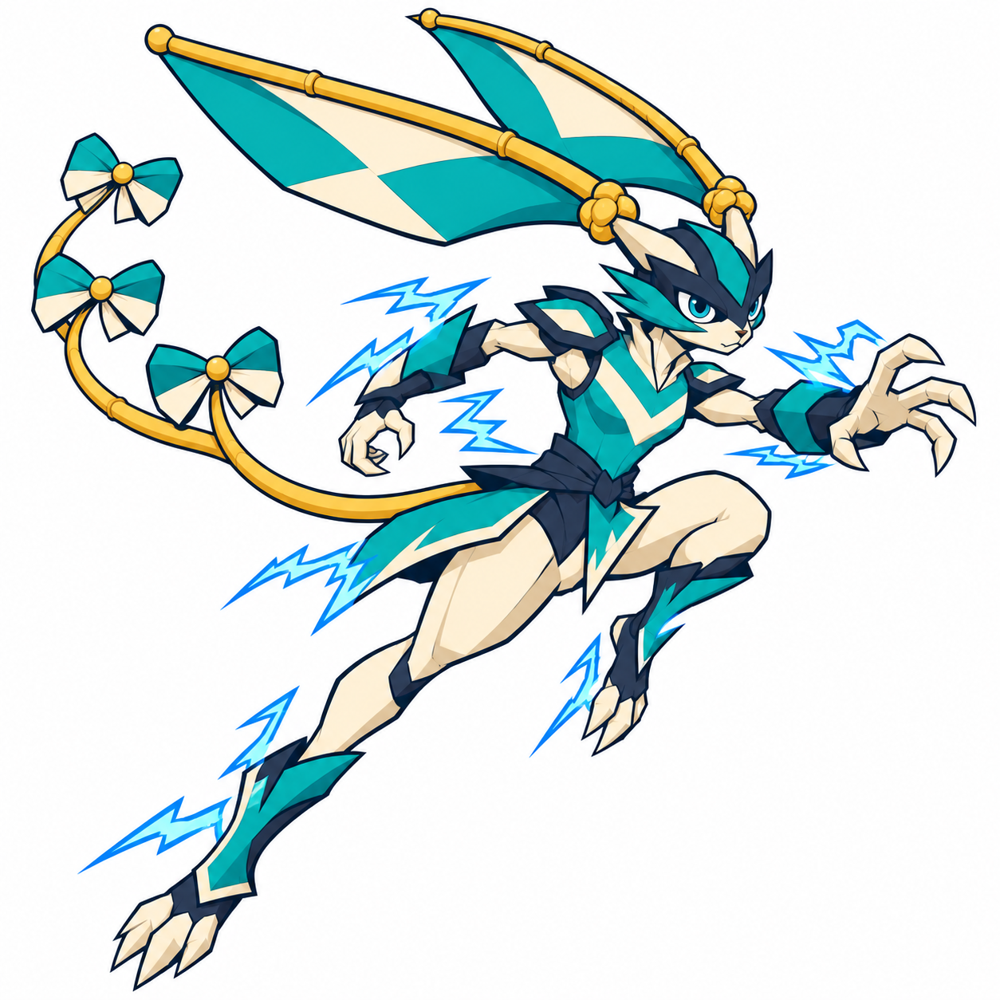

Rabbito — Velocista Relâmpago
Alternativa adulta proposta: máscara com olhos expostos, orelhas longas, rabiola de três laços e descargas azuis nas proteções e roupagem.

Brief · Conferência · Relação proposta
Nome e posição na árvore ainda propostos. Concepts aprovados anteriores preservados.